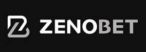

Trade Mark Journal No.2025/037 12 September 2025
UK00004255016 27 August 2025 (9,35,36,38,41,43)
Mark 1

Mark 2
- Class 9
- Computer game programs, especially computer software for games, gambling, online betting, lottery games, tips, gaming tournaments and online casinos; Registration media dedicated to online gaming, gambling and betting; Electronic and digital gaming, gambling and online betting machines; Computer software and computer programs relating to and featuring games, casino games, card games, gambling or betting; Computer software and computer programs downloadable or offered via the Internet; Software applications about or offering games, casino games, card games, gambling or betting; Software for games, betting and sports tips; Software for processing gaming and sports information; Recording substrates [magnetic]; Phonograph records; Coin-operated mechanisms; Software disks, tapes and diskettes, in particular for computer games; Magnetic cards, chip cards, electronic cards; Devices and CD-ROMs, electronic game cards; Electronic machines for consulting, loading and validating tickets and grids for tips, bets, games and competitions; Electronic gate systems; Data transmission servers; Registered gaming programs to control gaming and betting; Registered computer programs for paying players online; Terminals to purchase games, bets and predictions; Telecommunication and multimedia terminals related to games, sports betting and sports news; Downloadable audio, visual and audiovisual recordings provided via the internet; Electronic publications that can be downloaded or offered online from databases or the Internet; Downloadable ringtones, graphics, wallpapers; Virtual reality software; Virtual reality hardware; Virtual reality glasses; Virtual reality headsets; Betting terminals. .
- Class 35
- Business information services provided online from a global computer network or the internet; Business information services provided on-line from a computer database or the internet; Advertising, including on-line advertising on a computer network; Business assistance, management and administrative services; Distribution of advertising, marketing and promotional material; Product demonstrations and product display services; Organization of events, exhibitions, fairs and shows for commercial, promotional and advertising purposes; Arranging of demonstrations for advertising purposes; Dissemination of advertising, marketing and publicity materials; Promotion of goods and services through sponsorship; Advertising, marketing and promotional services; Advertising; Direct mail advertising; Online advertising on a computer network; Publication of publicity texts; Rental of advertising time; Rental of advertising space; Dissemination of advertising matter; Arranging newspaper subscriptions for others; Publicity material rental; Publicity columns preparation; Organization of competitions, prize draws for commercial purposes or advertising via the Internet or telecommunications systems; Organization of promotional operations for commercial or advertising purposes via the Internet or telecommunications systems.
- Class 36
- Real estate services; gambling hall rental services; Financing and funding services; financial services relating to betting, gaming, gambling, lotteries or the placing of bets; financial information in relation to betting, gambling, betting games, lottery or betting brokerage; financial advice and financial assistance in relation to betting, gambling, betting games, lottery or betting brokerage; credit card and debit card services in connection with betting, gambling, gaming, betting games, lottery or betting brokerage; Food and drink insurance.
- Class 38
- Provision of access to multi-user network systems allowing access to gambling and betting information and services via the internet, global computer networks or by telephone (including mobile phones); Telecommunication services; Provision of Internet chat room services; Providing online forums; Broadcasting and communication services; Computer aided transmission of messages and images; Transmission of electronic mail; Internet or telephone telecommunications services including mobile telephones; Telecommunication of information (including web pages); Provision of telecommunication links to computerized databases and websites over the Internet or by telephone including mobile phones; Information services relating to telecommunications; Telecommunications factual information services; Providing access to gambling, betting, casino services and other Internet gaming websites; Information, advisory and consultancy services relating to the aforesaid .
- Class 41
- Sporting activities; Gaming services, games of chance, online betting games, lottery games, lottery games, prediction games, gaming tournaments offered online on all types of communication networks; Provision of information in the field of gaming, gambling, games of chance, betting games, lottery games, lottery games, prediction games, gaming tournaments; Publication of works on games, gambling, games of chance, betting games, lottery games, lottery games, lottery games, betting games, tournament games; Poker game services; Provision of capacity games; Organization, production and presentation of any of the above services; Organization, production and presentation of tournaments, competitions, contests, games, game shows and events; Organization, production and presentation of tournaments, competitions, contests, games, game shows and events, all relating to amusement games, games, gambling, betting, card games, games of skill, poker games and casino games; Electronic game services provided by means of the internet; Multi-player card games, card game rooms and skill games, delivered live or over the internet or on handheld, mobile, handheld or tablet devices; Provision of news, i.e. the provision of information in connection with current events related to the above services; Provision of assistance and advice related to the above services; Money games services, gambling services, betting related services, casino services, card game services, poker game services, tournaments, contests, games, game shows and events; Providing online electronic publications, not downloadable; Electronic newsletters on entertainment, gambling, gambling organization, cash games, betting, casino services, poker tournaments, playing cards and poker delivered via the internet, e-mail or handheld, mobile, laptop or tablet devices; Organization, management and operation of entertainment services, sports activities, cultural activities, amusement services, amusement games, gaming services, gambling services, betting services, gambling services, casino services, card game services, poker game services, tournaments, contests, competitions, game shows, games and events; Sports betting and sports prediction services; Providing amusement arcade services; Gambling services; Gambling organization services, both offline and online, in casinos and betting and gaming rooms; Game services provided online from a computer network; Organization of competitions [education or entertainment]; Organization of games via internet, radio, telephone and telecommunications systems; Publishing books, newspapers and periodicals; Publication of books, newspapers, periodicals and electronic means of communication on the Internet or through telecommunications systems, in particular relating to games, competitions, bets and sports betting and sports information; Purchasing bets via the internet or telecommunications systems; Remote gambling services provided via telecommunications connections; Information about games provided online from a computerized database or on the Internet; Gaming services for entertainment purposes; On-line gaming services; Services for the operation of bingo and computer skill games; Information on games provided online from a computer database or via the Internet; Information and advice activities on all the above services; Effective sports information services; Sporting and cultural activities; Virtual reality gaming arcade services.
- Class 43
- Provision of food and drink; Bar services; Restaurant services; Cafeteria services; Snack-bar services; Information, advice and reservation services for the provision of food and drink; Pubs; Cocktail lounge services .
TECVIVO S.R.L.
Representative: Alpha & Omega